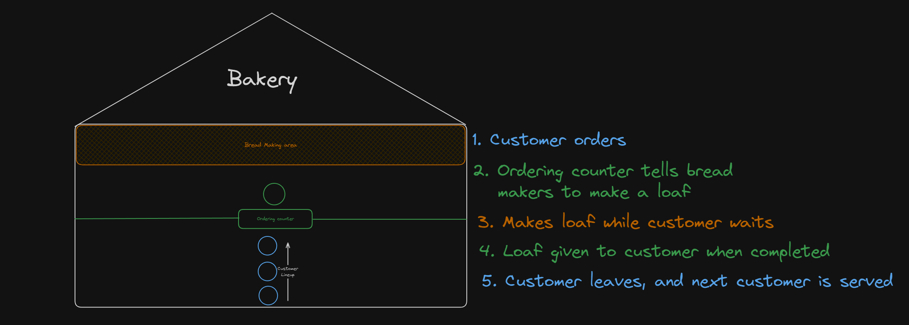
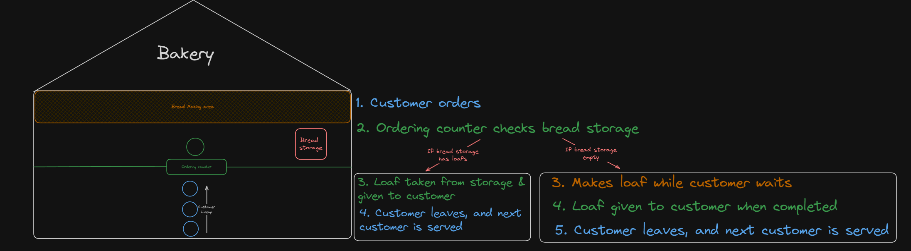
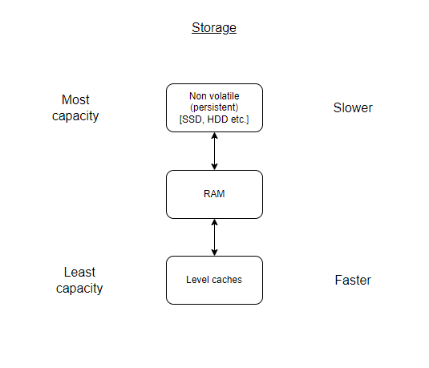

A cache is basically a system where you store something you know you will need for later. Imagine you work in a bakery. If you wait until someone orders a loaf of bread to cook it, then now every person who comes into your store has to wait for you to cook the loaf before they can leave.

Instead if there’s usually 10 people who come in to buy loaves of bread, you can pre-cook them, and have them ready to buy. This skips the whole baking time waiting because you’ve already done it ahead of time. At worst if you’re out of pre-made bread, it takes the same amount of time as the original bakery 
A cache is the same idea. Let’s say you have a website with 25 pages, instead of having to open the file every time a user asks for the page you could just read the most popular pages (let’s say 10) and store them in memory. This way whenever people ask for those pages you don’t have to go and fetch them because you can just grab them from memory.
Memory vs Storage
Storage in the context of this article is used to describe data that is stored persistently on SSD (solid-state drive(s)) and/or HDD (Hard-Disk Drives). You will see the word memory used a lot in this page, this is referring to system memory, which is a combination of RAM (Random Access Memory) and Level Caches. There are three major distinctions between memory and storage
- Capacity: Memory has significantly less overall size compared to storage
- Speed: while memory has less it can store, it can retrieve and store data much faster than storage
- Volatility: Memory is volatile meaning it is wiped whenever the parts are no longer receiving electricity, unlike storage which is etched into the disk

A Note About The Examples
The examples all have a fake database system. This is not real code that will run. This would be replaced with however you actually access your data in code. It’s just there to help illustrate a point. Here are the functions and the info about them
database.connect(); Returns an object with the database that hasÂ.get(table, key) andÂ.store(table, key, value) methodsdb.get(table,key); A method on the database object that gets the information from a specified table with a given key. For exampleÂdb.get("user", userID) gets data from the user table that has a given user IDdb.store(table, key, value); A method on the database object that stores information in a given table for a given key with a given value. For exampleÂdb.store("user", user_id, data), stores a key atÂuser_id in theÂuser table with theÂdata provided
Simple Example (memoization)
One of the simplest forms of caching is called memoization. Essentially you can have a function that takes in some parameters, and on the first run store the result in something like a hashmap/dictionary/list/array to look up the next time the function is called with the same parameters. For example let’s say you have a function that gets data about a user from a database by an id (an integer). Something like this:
js
function getUser(userID){ // Connect and get database object
db = database.connect(); // Query for user and return data
return db.get("user", userID);
}python
def get_user(user_id: int): # Connect and get database object
db = database.connect() # Query for user and return data
return db.get("user", user_id)In these two snippets there’s some sort of database system we need to connect to, then query for the data, and return it. This is fine, but what if we have 1000 queries at once? or the database is in one country, and the server is in another? We now have to wait for the connection every time. Often with something like this we might be making duplicate calls, like for example if there’s a profile page, or some user data that shows up across an app (profile pic etc.). What if instead we could store the results of the queries so that even just duplicate queries don’t need to happen. Here’s how we could do this:
js
const users = new Map(); // Store results of user queries
function getUser(userID){
if (!users.has(userID)){ // New ID
// Connect and get database object
db = database.connect();
// Query for user
data = db.get("user", userID);
// Store data for next time
users.set(userID, data)
return data
} else{
return users.get(userID)
}
}python
users = dict() # Store results of user queries
def get_user(user_id: int):
user_data = users.get(user_id, False)
if not user_data: # New user ID
# Connect and get database object
db = database.connect()
# Query for user
data = db.get("user", user_id)
# Store for next time
users[user_id] = data
return data
else:
return user_data
So if we called the function with the user ID 1, it will check if 1 exists in the map/dictionary, since it’s empty at the start it will then go and connect to the database, get the data and add it to the map/dictionary. Later on if we called the function again with the ID of 1 it would check the map/dictionary, see the value and just return it right away.
Python does have a built in one-liner to do this sort of thing inside the functools package.
Pre-fetches/Pre-caches
Memoization is great, but there are tons of other caching strategies that can be more useful. For example let’s say you run a ticket app for buying movie tickets. If most people will buy a ticket 1 hour in advance of the showtime, you might want to cache the data for each movie in the system 1 hour before showtime since it’s likely to be needed then.
This method is called pre-fetching. Essentially you are guessing based on trends when you will need data, and preparing the most likely data you will need ahead of time. This can help in systems where you might end up with a lot of stress all at once, like for example game servers where the most popular time iis 5-8pm in each country because that’s when people get home from work/school. So you can rotate prefetching server data for each country around when this peak time is!
Layers of Caches
There is rarely a system you will run into that only has one cache. There will often be multiple caches for multiple purposes interacting with each other. You might make a request for a webpage that compiles it’s data from a few dozen caches all at once.
Let’s examine what might happen for example when using a browser to get a webpage.
Device/OS Cache
Your operating system on the device you’re using to read this article will have tons of caches built in. These device/OS caches have tons of use cases. For example you may cache the information of bluetooth devices you have connected to in the past, so you don’t have to re-ask the device for it’s information every time you pair it.
Browser Cache
Now that you have the device level caches, the browser itself will often have it’s own caches. It might maintain stored information about you (passwords, name, address etc.), DNS information, and even caches of pages you’ve recently visited, so it doesn’t have to even go to the network for every request.
Server/CDN cache
Now that you’ve made the request for a page on the browser, the page you get returned back, might even just be a cache. Sometimes this comes in the form of caching like we’ve seen (memoization etc.), or it might use a CDN. A CDN is basically a system that exists just to store static (unchanging) content to be distributed to users quickly. This means static pages are stored, and the server running the app doesn’t even get asked for the content, instead the CDN just gives it old cached copies.
Full Example
So if we were to request https://schulichignite.com for example in a browser, here are some caches we might run into:
- Your OS cache for DNS; DNS is the system that turns domain names (like schulichignite.com) into something useful for your computer (IP address). Your operating system will typically have an internal cache for common DNS entries (google, microsoft etc.). Likewise there will be some caching as part of your home network and how you connect to the internet.
- Your browser cache; Next as your browser is making the request it might use the browser’s DNS cache to see if you’ve visited the domain before, and will use the stored value instead. On top of that even if it does go to the DNS it will also check the page cache in your browser to see if you’ve been to the site recently, and if you have to show you a cached copy it stores on your device.
- Server caches; Now assuming you didn’t get served the page from the browser’s cache you may find that the server you request the page from has the page stored in one of it’s caches, or in a CDN. At this point it will return the cached version of the page back to you, and your browser will take the response and cache it so it will load from disk next time.
At this point just making that one request could be 10’s to 100’s of caches that are returning your value. Theoretically speaking you might end up with a request that actually isn’t processed at all with the typical code and the whole experience is just retrieved from a cache!
Issues With Caches
We’ve talked about adding to caches, but the big problem with caches is cache invalidation. We’re fundamentally storing data about a thing in the assumption that the data should stay the same, and therefore only needs to be checked once. The problem with this is that data doesn’t stay the same. People change their name on their profile, they update their picture etc. and if everything is cached forever, then those updates aren’t possible.
Cache invalidation is an incredibly hard problem:
There are only two hard things in computer science: cache invalidation and naming things. - Phil Karlton
The question is basically “How much of the data we’re guessing will be useful later should we be keeping around, and for how long is it useful?”. One of the most common solutions is to pick a cap, for example only cache 200 pieces of user info at a time, or limit it to only X number of Mb of data etc.
One incredibly common option in webdev is TTL (time to live), which is often set to something like 10 mins. This means for each user the caches on their system are valid for 10 mins, then they are all purged and remade.
Another common problem where you can run into issues is when you think you’re clearing your cache properly, and aren’t.
In fact the common joke about turning a computer system on and off again largely comes from caches. Often times programs store things in memory, which on your system is then stored in RAM. RAM will automatically purge it’s entire cache when it loses power. This is why turning computers off and on again is sometimes handy!
Cache Invalidation Strategies
There are tons of cache invalidation strategies you can use to make sure your data is correct, while still getting some of the performance benefits of caching. There’s not enough time to cover them all, and you will likely on most projects want to employ more than one of these, but here are a few approaches.
Fixed-length
Essentially this system is what we’ve been talking about all this time, except we get rid of items when the cache reaches a certain size. This can be very important in systems with limited resources. You essentially just check if the cache has more items than a set threshold, and if it does you can either do:
- FIFO (Queue): First in First out, essentially you delete the oldest items first as you go
- LIFO (Stack): Last in First out, This means you delete the newest items first as you go
Depending on what you need. Keep in mind that some of the data types (maps, dictionaries etc.) in languages are unordered. This means deleting the “first†key might be just deleting the first key alphabetically, or randomly, not necessarily the first key entered.
Time-based/TTL
We already talked about TTL (time to live), this basically says “Hey this cache is valid for the next X mins/hours/days”. When people make a request the server will check if the current date & time are before the expiry, and if they are after they will update the cache. It might look something like this:
flowchart TD
A[User] -->|Request site| B(Server)
B --> C{See if current time >= expiry}
C -->|No| D[Cache]
D -->|Return stored result to user| A
C -->|Yes| E{Cache is invalid}
E --Request data then update cache & expiry-->D
With our earlier code, we could update it to expire after 10 mins:
js
const users = new Map(); // Store results of user queries
function getUser(userID){
if (!users.has(userID)){ // New ID
// Connect and get database object
db = database.connect();
// Query for user
data = db.get("user", userID);
// Store data for next time
userData = new Map();
userData.set("data", data)
// Set expiry
const MINUTESTOMILISECONDS = 60000
// NOTE: To add 10 mins you need to add 10 mins worth of miliseconds
tenMinsFromNow = new Date(Date.now() + (10* MINUTESTOMILISECONDS))
userData.set("expiry", tenMinsFromNow)
users.set(userID, userData)
return userData.get("data")
} else{
//Check if cache is valid
if (Date.now()> users.get(userID).get("expiry")){
// Connect and get database object
db = database.connect();
// Query for user
data = db.get("user", userID);
// Store data for next time
userData = new Map();
userData.set("data", data)
// Set expiry
const MINUTESTOMILISECONDS = 60000
// NOTE: To add 10 mins you need to add 10 mins worth of miliseconds
tenMinsFromNow = new Date(Date.now() + (10* MINUTESTOMILISECONDS))
userData.set("expiry", tenMinsFromNow)
users.set(userID, userData)
}
return users.get(userID).get("data")
}
}
python
from datetime import datetime, timedelta
users = dict() # Store results of user queries
def get_user(user_id: int):
user_data = users.get(user_id, False)
if not user_data: # New user ID
# Connect and get database object
db = database.connect()
# Query for user
data = db.get("user", user_id)
# Store for next time
users[user_id] = {"data":data, "expiry": datetime.now()+timedelta(minutes=10)}
return users[user_id]["data"]
else:
if datetime.now() > users[user_id]["expiry"]: # Check if cache is valid
# Connect and get database object
db = database.connect()
# Query for user
data = db.get("user", user_id)
# Store for next time
users[user_id] = {"data":data, "expiry": datetime.now()+timedelta(minutes=10)}
return users[user_id]["data"]
You can also use this for pre-fetching data. For example maybe you have users across the world, and you know people will use your service at 6pm IN THEIR TIMEZONE, so you can clear and fill your cache with people in different regions at 5:55pm their time. This can help mitigate outages if your system can’t handle the load of people all trying to call the function at the same time!
This approach is “easy†to implement, but it comes with a ton of problems:
- Time is relative; This isn’t a physics rant, time is literally relative around the world. Daylight savings, timezones etc. Not everyone’s 5pm is the same 5pm, even every persons hour is not the same. In lots of situations if you set a cache to expire in 10 mins, then daylight savings happens the cache might not invalidate for an hour longer than you were expecting!
- Moving pieces are hard to track; Usually your system won’t have one function being called. Lots of stuff happens at different times. Not every user is going to update their profile picture at your exact 10 min interval. This doesn’t matter a lot of the time, but for something time sensitive (like concert tickets going on sale), this can cause issues.
- Crystal balls aren’t very helpful; While lots of people are predictable, not every situation is. Let’s say you have the time based pre-fetching system in place, and you’re a movie streaming service. But then the global launch of a popular movie is at 3am in a country. You will end up with a massive load of traffic from that country at a time you weren’t expecting, and your caches won’t help you.
All of these problems are present in the above example. There will actually be several bugs if you use the code provided. In python you can use timezone packages like pytz to avoid some of the problems, and in javascript spacetime has similar functionality.
Update/Push-based
This method is essentially updating the cache when there is new data. This means you essentially “subscribe†to any changes. Here might be an example:
js
const users = new Map(); // Store results of user queries
function updateUser(user_id, data){
// Connect and get database object
db = database.connect()
// Store data in DB
db.store("user", user_id, data)
if (users.has(userID)){ // Exists in cache
// Update cache
users.set(userID, data)
}
}
function getUser(userID){
if (!users.has(userID)){ // New ID
// Connect and get database object
db = database.connect();
// Query for user
data = db.get("user", userID);
// Store data for next time
users.set(userID, data)
return data
} else{
return users.get(userID)
}
}
python
users = dict() # Store results of user queries
def update_user(user_id: int, data: dict):
# Connect and get database object
db = database.connect()
# Store data in DB
db.store("user", user_id, data)
# Update cache
user_data = users.get(user_id, False)
if user_data: # Exists in cache
users[user_id] = data
def get_user(user_id: int):
user_data = users.get(user_id, False)
if not user_data: # New user ID
# Connect and get database object
db = database.connect()
# Query for user
data = db.get("user", user_id)
# Store for next time
users[user_id] = data
return data
else:
return user_data
Event Based
Sometimes changes happen on very regular schedules. For these sorts of changes you can have the cache invalidation happen only after a threshold event. For example you only have to update a cached list of results of games in a soccer tournament after each game. So you can have the cache be updated when the game has officially been ended and called by the referee.
Resources
- Hardware
- Caching systems
- Cache Systems Every Developer Should Know (youtube.com)
- Introduction to Cache Memory (youtube.com)
- Cache Memory 1: Introduction (youtube.com)
- Caching Strategies and How to Choose the Right One | CodeAhoy
- Caching Strategies - 5 Strategies for Managing Cache Space (hazelcast.com)
- Caching patterns - Database Caching Strategies Using Redis (amazon.com)
- Cache Strategies | Medium
- Network-level CDN